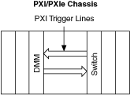
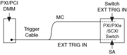

单模块扫描 - 握手
有关可能的触发输入位置，请参阅设备中开关模块的触发主题。
设置 3—使用内部 PXI 触发线
要与 PXI/PXI Express 开关握手，您可以使用 PXI/PXI Express 机箱的内部 PXI 触发线。在此设置中，在 DMM 和 PXI/PXI Express 开关之间不使用电缆进行触发。

- 在niSwitch Configure Trigger 中将Trigger Input设置为TTL n。
- 在niSwitch Configure Trigger 中将Scan Advanced Output设置为TTL m。
- 在niDMM Configure Measurement Complete Destination中将Measurement Complete Destination设置为TTL n。
- 在niDMM Configure Trigger中将Trigger Source设置为TTL m。
- 在niDMM Configure Multi Point中将Sample Trigger Source设置为TTL m。
有关可能的触发输入和扫描高级输出位置，请参阅设备中的开关模块。
设置 4 — 使用连接到 PXI/PXI Express 开关前面的 AUX 触发电缆
一些 PXI/PXI Express 开关可以接收其输入触发并在前面板或接线盒上发送其扫描高级。此设置使用 AUX 触发电缆来触发开关。

- 将来自 DMM 的 MC 信号连接到前面板上的外部触发输入端子或 PXI/PXI Express 开关的接线盒中。
- 将 DMM 的 Ext Trig In 信号连接到前面板上的 Scanner Advanced 端子或同一 PXI/PXI Express 开关的接线盒中。
- 在niSwitch Configure Trigger 中将Trigger Input设置为External。
- 在niSwitch Configure Trigger 中将Scan Advanced Output设置为External。
- 在niDMM中将测量完成目标设置为外部配置测量完成目标。
-
在niDMM Configure Trigger中将Trigger Source设置为External。
- 在niDMM Configure Multi Point中将Sample Trigger Source设置为External。
有关可能的触发输入和扫描高级输出位置，请参阅设备 中的开关模块。
 提交有关此主题的反馈。
提交有关此主题的反馈。
 访问ni.com/support以获得技术支持。
访问ni.com/support以获得技术支持。